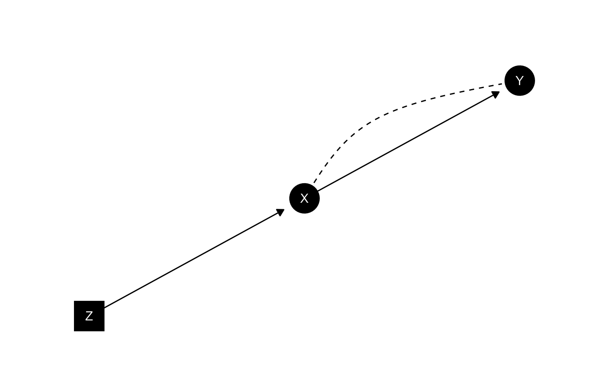
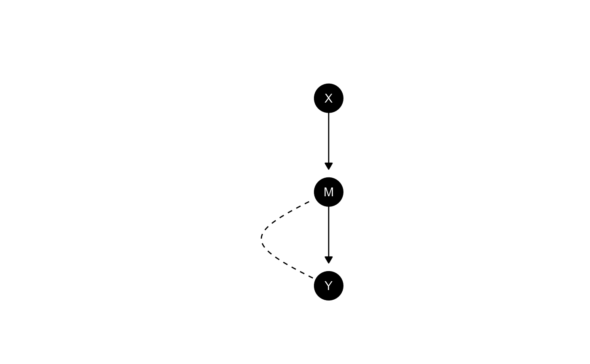

Creates a plot of a DAG using ggplot and a Sugiyama layout from igraph (via ggraph). Unmeasured confounds (`<->`) are drawn as dashed arcs. Users can control node sizes, colors, coordinates, and label behavior. Other modifications can be made by adding ggplot layers.
A plot method for objects of class causal_model; a thin
wrapper around plot_model.
Usage
plot_model(
model = NULL,
x_coord = NULL,
y_coord = NULL,
labels = NULL,
title = "",
textcol = "white",
textsize = 3.88,
shape = 16,
nodecol = "black",
nodesize = 12,
parse = FALSE,
strength = NULL,
pad = NULL,
normalize_layout = TRUE,
confound_bulge = 0.3,
clip = "off"
)
# S3 method for class 'causal_model'
plot(x, ...)Arguments
- model
A
causal_modelobject generated frommake_model- x_coord
A vector of x coordinates for DAG nodes, in the same order as
model$nodes. If bothx_coordandy_coordareNULL, a Sugiyama layout is computed from directed edges only.- y_coord
A vector of y coordinates for DAG nodes, in the same order as
model$nodes.- labels
Optional labels for nodes
- title
String specifying title of graph
- textcol
String specifying color of text labels
- textsize
Numeric, size of text labels
- shape
Indicates shape of node. Defaults to circular node.
- nodecol
String indicating color of node that is accepted by ggplot's default palette
- nodesize
Size of node.
- parse
Logical. If `TRUE`, node labels are parsed as R expressions, which allows mathematical notation (for example `"alpha^2"`). Defaults to `FALSE`.
- strength
Curvature of confound arcs, passed to
geom_curve(0= straight, about0.3= a shallow bow,1≈ a semicircle). UseNULLor"auto"(the default) to choose a shallow signed curvature from geometry (seeconfound_bulge). A numeric value restores a fixed curvature (the old ggraph default of0.3is a reasonable shallow arc undergeom_curve).- pad
Additive scale padding in data units around nodes.
NULL(default) chooses a pad from layer spacing so nodes are not clipped when several share an x or y coordinate (ggplot's multiplicative expand alone is zero in that case). Set to0to disable.- normalize_layout
Logical. If
TRUE(default) and coordinates were not supplied by the user, rescale x so horizontal span matches typical layer spacing. Prevents a tiny x-range from stretching across the whole panel (e.g. a sink node atx = 0.5while others sit atx = 0).- confound_bulge
Absolute
geom_curvecurvature used whenstrengthisNULL/"auto"(sign chosen to bend toward free space). Default0.3. Ignored whenstrengthis numeric.- clip
Passed to
coord_cartesian. Default"off"so node discs are not cropped at the panel edge.- x
A
causal_modelobject generated frommake_model.- ...
Arguments passed to
plot_model.
Examples
if (FALSE) { # \dontrun{
model <- make_model('X -> K -> Y')
# Simple plot
model |> plot_model()
# Adding additional layers
model |> plot_model() +
ggplot2::coord_flip()
# Adding labels
model |>
plot_model(
labels = c("A long name for a \n node", "This", "That"),
nodecol = "white",
textcol = "black")
# Math labels: add parse = TRUE
make_model() |>
plot_model(
labels = c("alpha^2", "beta[1]"),
parse = TRUE,
textcol = "black", nodecol = "white")
# Mixed math text labels: add parse = TRUE
make_model() |>
plot_model(
labels = c('alpha ~ "class"', 'beta ~ "class"'),
parse = TRUE,
textcol = "black", nodecol = "white",)
# Adding math title after graph creation
make_model() |>
plot_model() +
ggplot2::labs(title = expression(paste(Gamma, " graph")))
} # }
# DAG with unobserved confounding and shapes and position control
make_model('Z -> X -> Y; X <-> Y') |>
plot(x_coord = 1:3, y_coord = 1:3, shape = c(15, 16, 16))

# Legacy confound curvature (fixed strength)
make_model('X -> M -> Y <-> M') |>
plot_model(strength = 0.3, normalize_layout = FALSE, pad = 0)
# Manual pad / bulge
make_model('X -> M -> Y <-> M') |>
plot_model(pad = 0.5, confound_bulge = 0.25)
